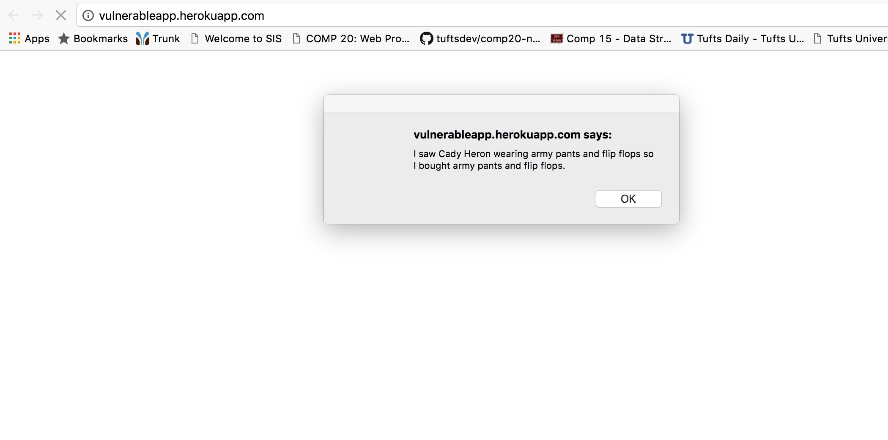

This is a security assessment of the web application "server-vuln.js". This security assessment is being carried out for Comp 20:Lab 13.
The application, is a Node.js application that uses Express frameworks and MongoDB. It functions mainly as a database for user check-ins, with its main homepage stating "Not FourSquare." However the vulnerabilities in the code allow for hackers to make malicious hack-ins which threaten the security and the privacy of users of the database as well as the sanctity of the website itself. This document attempts to ratify those errors by explaining the vulnerabilities of the web application and offering solutions for its future.
I began by performing 'black box testing.' Without looking at the source code, I downloaded the files for the application onto my Virtual Machine and configured and ran the application. I then used curl from my terminal to try and hack the web application and thus was able to exploit several security vulnerabilities. I later explored these vulnerabilities as I carried out "white box testing" when I reviewed the source-code in-depth and reviewed ways that security breaches were possible and how to prevent those hacks.
As it currently stands, the web application vulnerabilities make it nearly unserviceable for users. The multiple holes in defense allow for easy access and manipulation of user data in the database, as well as the facile transformation of the website using Javascript. While simple, these attacks could lead users to other sites, or at the very least, distract them with annoying pop-ups. It is imperative that the application implement security measures to better protext the data of its users and to return its state to one of functionality and accessibility.
POST API
High
This instance of Cross-Site Scripting leaves users especially vulnerable because it fails to check input for validity before posting it to the site. While there is a check on two of the fields of entry for the database (mainly the check validator.toFloat(lat) and validator.toFloat(lng), there is no check on the entry field for login, so an attacker could insert a script to create an alert, redirect a user to a malicious site, or change the very structure of the server-vuln app itself.
Executing the post with script injection via curl
The resulting alert that appears onload of the application, after XSS
The issue can be resolved by simply escaping the characters from user input so any script remains unexecuted and malicious attacks can be prevented. Additionally, since the required paramters for the database (login, lat, and lng) do not require special characters, positive or "whitelist" server-side input validation can be implemented so that inputs are validated based on length and characters before actually being entered into the database.
Available via the "post" command.
High
Renders the website useless.
Insert image here.
Insert another image here.
The issue can be resolved by ...
Available via the "post" command.
High
Renders the website useless.
Insert image here.
Insert another image here.
The issue can be resolved by ...
Considering that the application was created for the "Security" Section of the Comp 20 class, it should go without saying that this is an application that was, for all intents and purposes, made to be broken. In fact, the vulnerabilities of the application serve here in a greater sense as a teaching tool for the class to help students understand the myriad of ways that hackers can find and exploit vulnerabilities in web applications. By no means should this application be available to the public for use without serious overhaul of its security measures, as have been outlined above. However, as it stands now, the server-vuln application is an excellent example of vulnerabilities that allow attacks, such as XSS (Cross-Site Scripting) and Injection, to take place and thus the application could serve as an educational tool for other companies in an environment to present to them a real-time example of security susceptibility.
If this application is to continue running and the goal is, in fact, to eliminate its susceptibility to security threats, then my recommendation would be a a complete overhaul of the application, implementing security measures, such as have been outlined above, as well as a more thorough examination of the security of the database's accessibility. The estimated cost of such a project would be $500, and investing in such a measure now could save thousands of dollars down the line. When searching for such a service, ensure that you speak to someone who cares about you and your business and is willing to go above and beyond for all of your security needs.